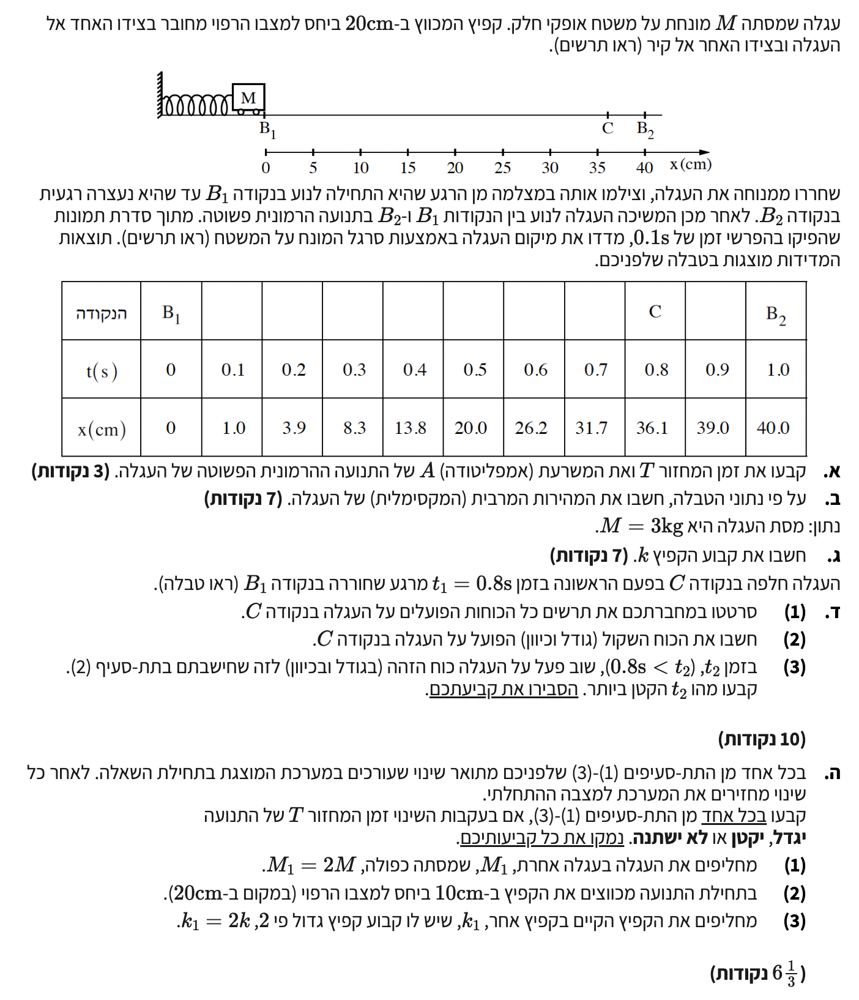

פתרון בגרות בפיזיקה
מכניקה 2018 - שאלה 5
פתרון מודרך, צעד-אחר-צעד: תנועה הרמונית פשוטה

סעיף א': קביעת זמן המחזור והמשרעת
העגלה שוחררה ממנוחה בנקודה \( B_1 \), שהיא נקודת הקצה, ולכן שם המהירות היא אפס. על פי הטבלה, ברגע \( t = 0 \) העגלה נמצאת במיקום \( x = 0 \). העגלה נעצרת רגעית שוב בנקודה \( B_2 \) בזמן \( t = 1.0 \text{ s} \), במיקום \( x = 40 \text{ cm} \). נקודה \( C \) היא נקודה מסוימת על המסלול שבה עוברת העגלה.
- מיקום ההתחלה \( B_1 \): \( x_{B1} = 0 \text{ m} \)
- מיקום העצירה \( B_2 \): \( x_{B2} = 0.4 \text{ m} \)
את זמן המחזור \( T \) של התנועה ההרמונית, ואת המשרעת (אמפליטודה) \( A \).
הגדרת המשרעת: מרחק נקודת הקיצון משיווי משקל מחזור שלם מורכב מ-4 משרעות (הלוך ושוב)
פתרון צעד-אחר-צעד:
נקודת שיווי המשקל (\( x_e \)) של גוף המבצע תנועה הרמונית נמצאת בדיוק באמצע בין שתי נקודות הקצה (נקודות העצירה הרגעיות). נחשב את מיקומה:
המשרעת \( A \) היא המרחק בין נקודת שיווי המשקל \( x_e \) לבין נקודת קצה (למשל \( B_2 \)). נחשב את ההפרש:
תנועה מנקודת קיצון אחת (\( B_1 \)) לנקודת הקיצון השנייה (\( B_2 \)) מהווה בדיוק חצי מחזור תנועה. לכן, הזמן שלקח לעגלה לעבור מ- \( t=0 \) ל- \( t=1.0 \text{ s} \) שווה ל- \( \frac{T}{2} \).
המשרעת היא \( A = 0.2 \text{ m} \) וזמן המחזור הוא \( T = 2.0 \text{ s} \).
סעיף ב': חישוב המהירות המרבית
בשאלה נתונה טבלת מקום-זמן. בנוסף, מתוך סעיף א' מצאנו כי המשרעת היא \( A = 0.2 \text{ m} \), זמן המחזור הוא \( T = 2.0 \text{ s} \) ונקודת שיווי המשקל היא במיקום \( x_e = 0.2 \text{ m} \).
את גודלה של המהירות המרבית (המקסימלית) של העגלה, המתרחשת בעת מעברה בנקודת שיווי המשקל.
\( \bar{v} = \frac{\Delta x}{\Delta t} \) (חישוב מנתוני הטבלה) \( v = \pm \omega\sqrt{A^2 - x^2} \) (חישוב לבקרה)
חישוב מרכזי - על פי נתוני הטבלה:
מאחר שבסעיף נדרשנו לענות על פי נתוני הטבלה, עלינו למצוא את המהירות המרבית המתרחשת במעבר בנקודת שיווי המשקל (\( x = 20 \text{ cm} \)). נקרב את המהירות הרגעית על ידי חישוב המהירות הממוצעת בין שתי הנקודות בטבלה שהן הקרובות ביותר לנקודה זו (הנקודות שניתנו: \( (t_1=0.4 \text{ s}, x_1=13.8 \text{ cm}) \) ו- \( (t_2=0.6 \text{ s}, x_2=26.2 \text{ cm}) \)):
נציב את הנתונים כדי למצוא את שיפוע המיתר סביב שיווי המשקל. נזכור להמיר את המרחק למטרים כדי לקבל מהירות ביחידות תקניות של \( \text{m/s} \) (כלומר, \( 13.8 \text{ cm} = 0.138 \text{ m} \) ו- \( 26.2 \text{ cm} = 0.262 \text{ m} \)):
חישוב נוסף לבקרה (תיקוף התוצאה):
כדי לוודא שהתוצאה שהתקבלה מהטבלה נכונה והגיונית, נבצע עליה "בקרה" באמצעות המודל התיאורטי של תנועה הרמונית פשוטה. נשתמש בנוסחת המהירות המרבית: \( v_{\text{max}} = \omega A \).
נחשב תחילה את התדירות הזוויתית \( \omega \):
חשוב לשים לב: אם נרצה להשתמש בנוסחה הכללית המקשרת בין מהירות למיקום מתוך דף הנוסחאות, \( v = \pm \omega\sqrt{A^2 - \Delta x^2} \), עלינו להיזהר מאוד. ה- "x" המופיע בנוסחה זו בדף הנוסחאות מתייחס להעתק מנקודת שיווי המשקל (שאותו נסמן למען הבהירות ב- \( \Delta x \)), ולא לקואורדינטת המיקום המוחלטת כפי שמופיעה בטבלת הנתונים בשאלה!
בטבלה, נקודת שיווי המשקל נמצאת בקואורדינטה \( x_e = 0.2 \text{ m} \). לכן, ההעתק מנקודת שיווי המשקל מחושב כ- \( \Delta x = x_{\text{table}} - x_e \).
כאשר העגלה חולפת בנקודת שיווי המשקל, הקואורדינטה שלה לפי הטבלה היא אמנם \( x_{\text{table}} = 0.2 \text{ m} \), אך ההעתק שלה ממשית משיווי המשקל הוא אפס (\( \Delta x = 0.2 - 0.2 = 0 \)). נציב נתון זה (\( \Delta x = 0 \)) בנוסחה, יחד עם \( \omega = \pi \) ו- \( A = 0.2 \text{ m} \):
האם נקבל את אותה התוצאה? כן! הערך התיאורטי (\( 0.628 \text{ m/s} \)) קרוב מאוד לערך שהתקבל מחישוב השיפוע בטבלה (\( 0.62 \text{ m/s} \)). ההפרש הקטן נובע מכך ששיפוע מיתר הוא רק קירוב לשיפוע המשיק (המהירות הרגעית המדויקת בנקודת שיווי המשקל), אך התאמה זו מוכיחה שהתשובה הניסויית שלנו מבוססת ומדויקת.
על פי הטבלה, המהירות המרבית של העגלה היא \( v_{\text{max}} \approx 0.62 \text{ m/s} \).
סעיף ג': חישוב קבוע הקפיץ
מסת העגלה נתונה בשאלה: \( M = 3 \text{ kg} \). מצאנו קודם שזמן המחזור הוא \( T = 2.0 \text{ s} \).
את ערכו של קבוע הקפיץ \( k \).
\( T = 2\pi\sqrt{\frac{m}{c}} \)
חישוב:
בדף הנוסחאות מופיע הקבוע \( c \) המייצג את קבוע כוח ההחזרה בתנועה הרמונית. במקרה שלנו, הכוח המחזיר מסופק בלעדית על ידי הקפיץ, ולכן \( c = k \). נציב את הנתונים בנוסחת זמן המחזור:
נחלק את שני האגפים ב- 2 כדי לבודד את השורש ולאחר מכן נעלה את שני האגפים בריבוע:
נכפול ב- \( k \) ונחשב:
קבוע הקפיץ הוא \( k = 29.6 \text{ N/m} \).
סעיף ד' (1): תרשים כוחות בזמן \( t_1 = 0.8 \text{ s} \)
העגלה נמצאת בזמן \( t_1 = 0.8 \text{ s} \). על פי הטבלה, בנקודת זמן זו העגלה נמצאת במיקום \( x = 36.1 \text{ cm} \) (זוהי נקודה C).
- מיקום העגלה בנקודה C: \( x_C = 0.361 \text{ m} \)
לשרטט תרשים של כל הכוחות הפועלים על העגלה (FBD) ברגע זה.
מודל חלקיק (FBD)
פתרון:
מכיוון שהמיקום \( x = 0.361 \text{ m} \) גדול ממיקום שיווי המשקל \( x_C = 0.20 \text{ m} \), הקפיץ מתוח ולכן מפעיל כוח שמאלה בניסיון להחזיר את העגלה למצב הרפוי. כמו כן, פועלים על העגלה כוח הכבידה כלפי מטה והכוח הנורמלי מהמשטח כלפי מעלה.
![]()
סעיף ד' (2): הכוח השקול
מיקום העגלה \( x = 0.361 \text{ m} \). מיקום שיווי משקל \( x_e = 0.20 \text{ m} \). קבוע הקפיץ שמצאנו \( k = 29.6 \text{ N/m} \).
את הכוח השקול (גודל וכיוון) הפועל על העגלה בנקודה זו.
\( \sum F = -cx \) \( \sum F = ma \) (החוק השני של ניוטון)
חישוב:
נרשום את משוואות הכוחות עבור כל ציר בנפרד. בציר האנכי אין תנועה, ולכן לפי החוק הראשון של ניוטון:
הכוחות האנכיים מבטלים זה את זה. לכן הכוח השקול הכולל נובע אך ורק מהכוח בציר האופקי, שהוא כוח הקפיץ. על פי דף הנוסחאות לשקול כוחות בתנועה הרמונית, הכוח תלוי בהעתק מנקודת שיווי המשקל. נחשב את ההעתק \( \Delta x \):
כעת נחשב את הכוח השקול (כאשר כזכור \( c = k \)):
הסימן השלילי מעיד על כך שזהו כוח מחזיר הפועל בכיוון המנוגד לכיוון ההעתק (כלומר שמאלה).
גודל הכוח השקול הוא \( 4.77 \text{ N} \) וכיוונו שמאלה (לכיוון נקודת שיווי המשקל).
סעיף ד' (3): מציאת הזמן \( t_2 \)
כוח זהה לחלוטין (בגודל ובכיוון) פעל על העגלה בזמן \( t_2 \) שגדול מ- \( 0.8 \text{ s} \). ידוע כי זמן ההגעה מנקודה זו עד לקצה התנועה (\( x = 40 \text{ cm} \)) קורה ב- \( t = 1.0 \text{ s} \).
את הזמן המוקדם ביותר \( t_2 \) שבו הכוח חזר להיות בדיוק אותו הדבר.
תלות הכוח האלסטי במיקום בלבד סימטריה בתנועה הרמונית פשוטה קינמטיקה: \( x(t) = A\cos(\omega t + \varphi) \)
פתרון משיקולי סימטריה:
מכיוון שכוח הקפיץ תלוי אך ורק במיקום העגלה (\( \sum F = -k\Delta x \)), כדי שיפעל כוח זהה בגודלו ובכיוונו, העגלה חייבת להימצא שוב בדיוק באותו מיקום, כלומר \( x = 36.1 \text{ cm} \).
העגלה הייתה במיקום זה בזמן \( t_1 = 0.8 \text{ s} \), כשהיא נעה ימינה לעבר נקודת הקיצון \( B_2 \) (שאליה היא מגיעה בזמן \( t = 1.0 \text{ s} \)). פרק הזמן שלקח לה להגיע מהנקודה \( x = 36.1 \text{ cm} \) ועד לנקודת העצירה המוחלטת בקצה הוא:
מטעמי סימטריה של התנועה ההרמונית, הזמן שייקח לעגלה לחזור מנקודת הקיצון חזרה בדיוק לאותו מיקום הוא זהה. לכן נוסיף זמן זה לזמן שבו היא הייתה בקצה:
דרך פתרון חלופית: שימוש בפונקציית מקום-זמן (קינמטיקה)
נוכל להגיע לאותה התוצאה בדיוק על ידי בניית משוואת התנועה של העגלה. העגלה שוחררה ממנוחה ב- \( x=0 \) (הקצה השמאלי). מכיוון שנקודת שיווי המשקל היא ב- \( x_e = 0.2 \text{ m} \), העגלה מתחילה בהעתק מקסימלי שלילי (\( -A \)). לכן הפונקציה המתארת את ההעתק היא פונקציית קוסינוס שלילית (או פונקציית קוסינוס עם פאזה של \( \pi \)):
אנו מחפשים את הזמן הבא שבו הכוח שווה, כלומר הזמן שבו ההעתק חוזר לאותו הערך שהיה ברגע \( t_1 = 0.8 \text{ s} \). נשווה את הפונקציות עבור שני הזמנים:
הפתרון הכללי למשוואה טריגונומטרית מסוג זה (במעלות רדיאנים) הוא \( \pi t_2 = 2\pi n \pm 0.8\pi \). לאחר צמצום ב- \( \pi \) נקבל את המשוואה: \( t_2 = 2n \pm 0.8 \).
עבור \( n=0 \) והסימן החיובי, נקבל את הזמן המקורי \( t=0.8 \). כדי למצוא את הפעם הבאה (הזמן המינימלי הגדול מ-0.8), נציב \( n=1 \) ונבחר בסימן המינוס:
בשתי הדרכים, התוצאה המתקבלת זהה ועקבית.
הזמן הקטן ביותר הוא \( t_2 = 1.2 \text{ s} \).
סעיף ה': שינויים במערכת והשפעתם על זמן המחזור
שלושה שינויים בלתי תלויים במערכת (לאחר כל שינוי מחזירים למצב ההתחלתי).
לקבוע עבור כל שינוי האם זמן המחזור \( T \) יגדל, יקטן או לא ישתנה, ולנמק.
\( T = 2\pi\sqrt{\frac{m}{k}} \)
ניתוח שלב-אחר-שלב:
על פי נוסחת זמן המחזור, ניתן לראות כי זמן המחזור עומד ביחס ישר לשורש המסה. אם המסה מוגדלת, הביטוי בתוך השורש גדל, ולכן זמן המחזור \( T \) יגדל.
שינוי המצב הרפוי של הקפיץ משנה למעשה את נקודת שיווי המשקל המרחבית, אך הוא אינו משנה את תכונות המערכת הפיזיקליות: המסה \( M \) נשארה זהה, וקבוע הקפיץ \( k \) נשאר זהה. מאחר וזמן המחזור תלוי אך ורק ב- \( M \) וב- \( k \), זמן המחזור לא ישתנה.
על פי נוסחת זמן המחזור, זמן המחזור נמצא ביחס הפוך לשורש קבוע הקפיץ. כאשר קבוע הקפיץ גדל (הקפיץ "קשה" יותר), המחנה בשבר גדל, ולכן ערך השבר כולו קטן. כתוצאה מכך, זמן המחזור \( T \) יקטן.
מסקנות:
(1) זמן המחזור יגדל.
(2) זמן המחזור לא ישתנה.
(3) זמן המחזור יקטן.